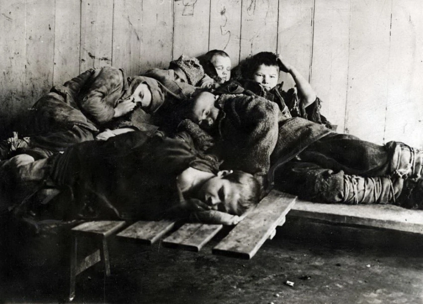

После Первой Мировой войны и Октябрьской революции 1917 года беспризорность в России приняла угрожающий характер. В 1921 году в России насчитывалось 4,5 млн беспризорников, а к 1922 - около 7 млн беспризорных. 27 января 1921 года была создана Комиссия по улучшению жизни детей, первый из советских органов, добившийся результатов в борьбе с беспризорностью. При прямом и косвенном участии наркома просвещения Анатолия Луначарского и передового педагога Антона Макаренко удалось сделать немало, чтобы детская беспризорность в стране перевалила через пик и ощутимо пошла на убыль. Созданная Комиссия фактически инициировала создание национальной сети социальных учреждений — детских домов, интернатов, воспитательных колоний для социализации, обучения и перевоспитания беспризорных.
